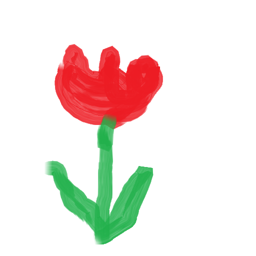

みやざき＠じらふのインターネット研究会用ページ
過去の回の情報
AI資料とgithub初期設定
github初期設定の設定はこちら
機械学習(AI)による白黒写真のカラーリング
白黒写真のAI着色
[2022/12/17 インターネット研究会用資料]
最新のAI画像生成技術Stable diffuision
【AI論文解説】物理学の知識を背景とした画像生成手法 Part1
GPUのない人向きstable_diffusion.openvinoの使い方(下にGPUのある人向けの操作もあります)
Python 3.8か3.9インストールする(インストールしていない場合)。
Windows10以上の場合Microsoftストアからインストールするのがおすすめです。
https://github.com/bes-dev/stable_diffusion.openvino
githubの上のリポジトリのREADME.mdを読んでインストール手順を実行する。
具体的にはリポジトリをcloneしたあとコマンドプロンプトで次のコマンドを実行するだけ。
pip install -r requirements.txt
実行時になにか警告が表示された場合それに従う。
コマンドプロンプトで実行してみる。
python demo.py --prompt "Photo of flower"
これで数分待つとoutput.pngに花の写真が出力されるはずです。
標準で32stepsかかります。
※注意 Windowsではモデルをキャッシュフォルダにダウンロードするため、初回実行は管理者権限のコマンドプロンプトで実行する必要があります。一度ダウンロードした後は通常の権限のコマンドプロンプトで実行できます。
ちなみに雑に描いた左の元画像を用意し、次のコマンドを実行すると、左の画像が出力されます。
python demo.py --init-image flower.png --prompt "Photo of flower"
元画像
出力画像
nVidia GPUのある人向き AUTOMATIC1111版stable-diffusion-webui の使い方
Python 3.10をインストールする(インストールしていない場合)。
Windows10以上の場合Microsoftストアからインストールするのがおすすめです。
openvinoとは共存が難しいので、どちらかのみをインストールすることになります。
https://github.com/AUTOMATIC1111/stable-diffusion-webui
githubの上のリポジトリのREADME.mdを読んでInstallation and Runningびインストール手順を実行する。
具体的にはリポジトリをcloneしたあと次の内容を実行するだけ。
学習モデルmodel.ckptを/models/Stable-Diffusionへのコピー
GFPGANv1.4.pthをwebui.pyと同じディレクトリへのコピー
サイズが大きいためインターネット研究会当日はmodelと.pthファイルは宮崎が持参する予定です。
コマンドプロンプトで実行してみる。
webui-user.bat"
しばらく待つとコマンドプロンプトに、待受URLが表示されるので、ブラウザでそのURLを開いてみる。
設定を変更しないと
http://127.0.0.7:7861
になります。